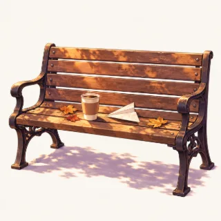

이번 주 글감
소식을 불러오지 못했습니다.
공지, 모임 모집, 후기, 정보
동네친구들의 공지와 모임 소식을 올리는 게시판입니다.


이번 주 글감서버 업데이트 전이라 이 종류의 항목은 저장되지 않습니다. 날짜와 장소는 본문에 적어 주세요.
이 브라우저에 저장된 비밀번호를 채웠습니다.
같은 시간대(앞뒤 2시간) 중복 개설은 원칙적으로 금지입니다. 정원이 찼거나 신청 마감이 지난 모임은 예외로 칩니다.